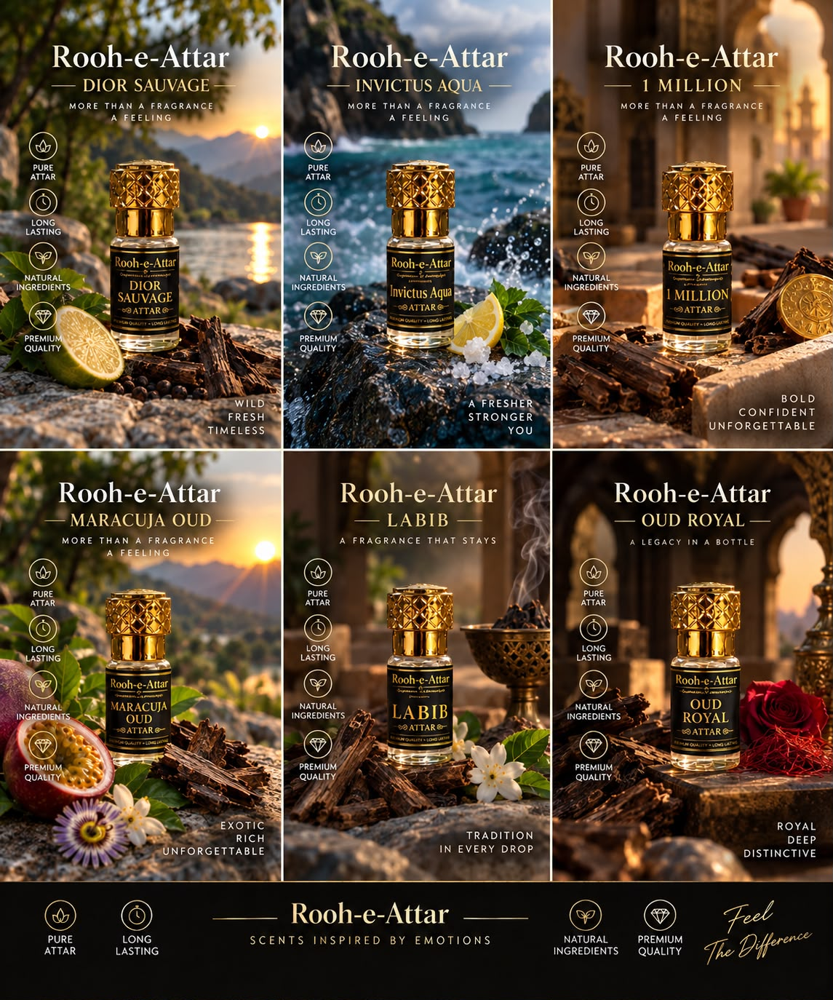
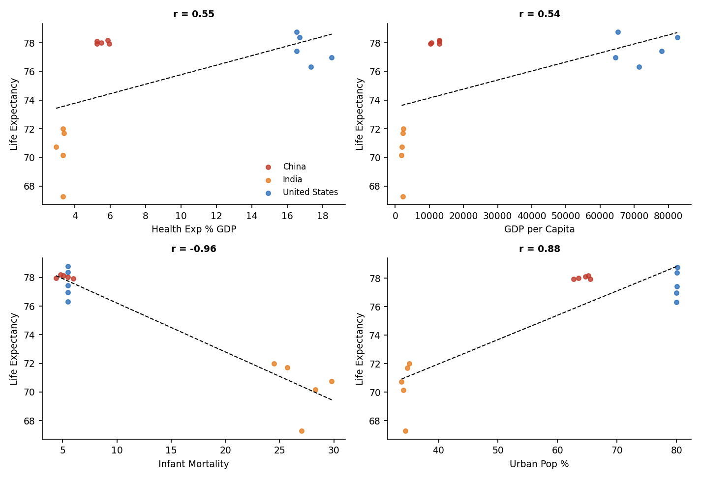
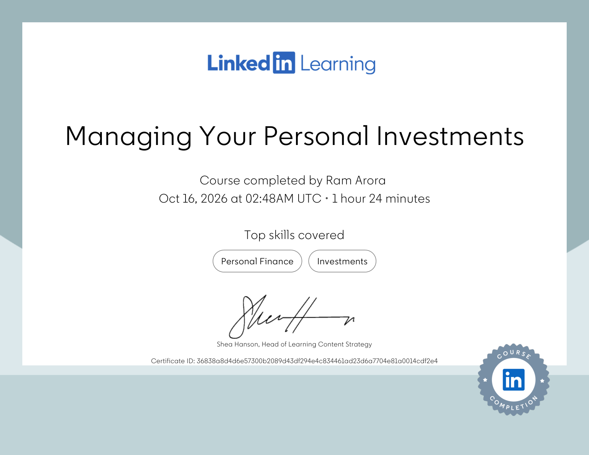
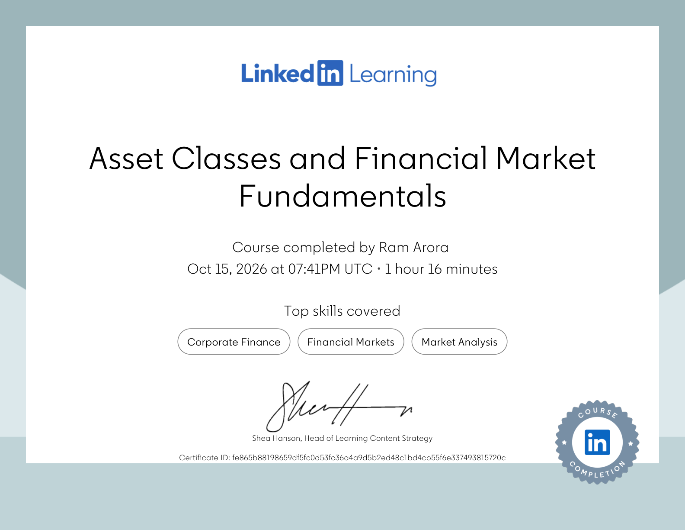
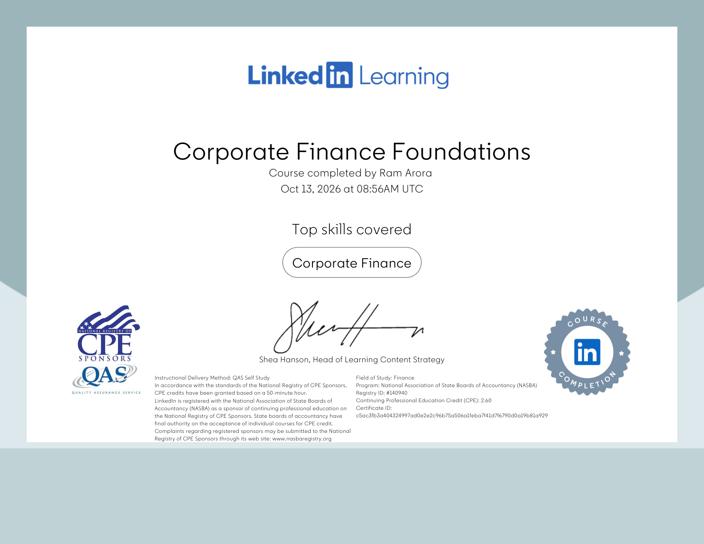
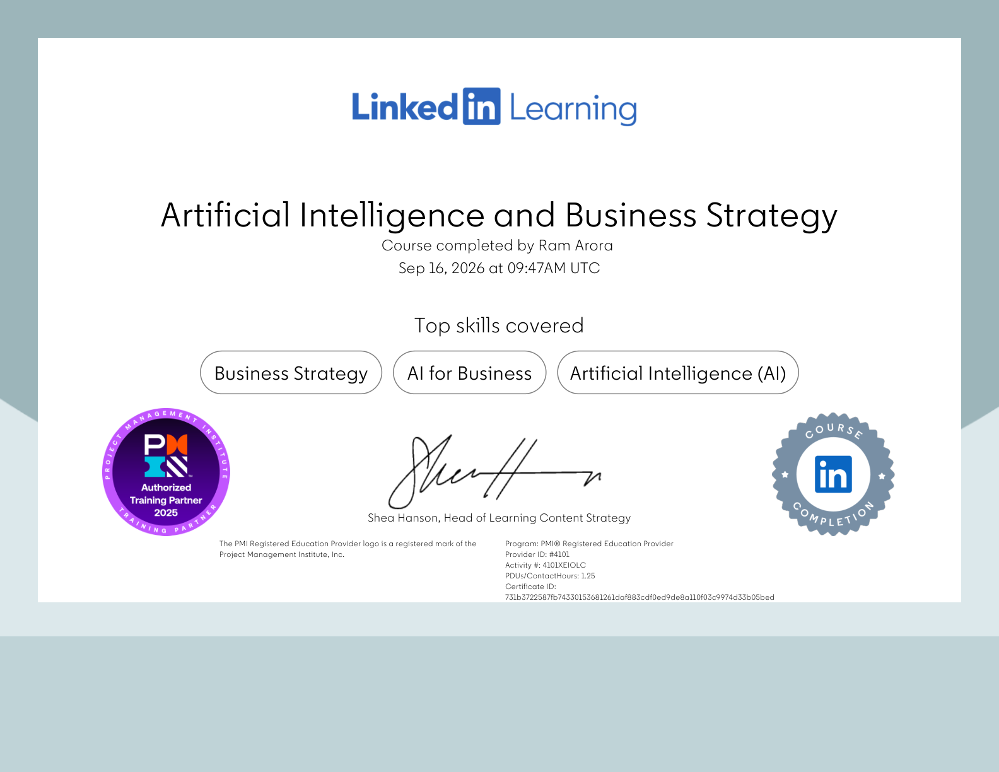
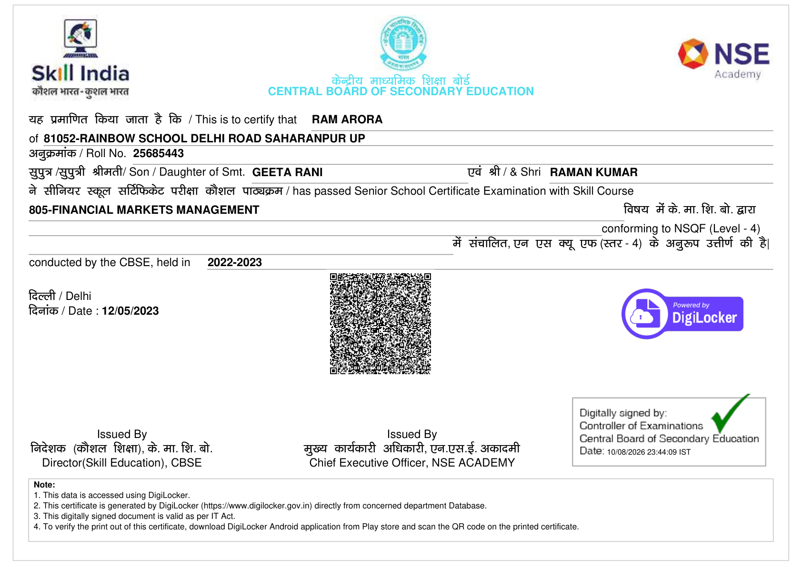

2026 — 2028
CURRENTLY PURSUING
Master of Business Administration
Lovely Professional University / Phagwara, PunjabMittal School of Business
Exploring business.
Understanding the numbers.
An Economics (Honors) graduate and MBA student at Lovely Professional University, with an interest in corporate finance, financial markets and investment research.
I’m Ram Arora, an Economics (Honors) graduate from Panjab University, now pursuing my MBA at the Mittal School of Business, Lovely Professional University.
I’m interested in how companies raise capital, finance growth and make investment decisions. My academic work includes a multi-year analysis of Exide Industries’ financing strategy, co-authored with my classmates and selected for publication.
I work with Excel and financial statements, and follow personal investing and portfolio management. Through the Economics Society at PU, I also organized and led workshops on personal finance and investment.
I’m looking to begin a career in finance, banking or business analytics, where I can keep developing these skills through practical work.
Explore my researchMicrosoft Excel · MS Office · PowerPoint · Google Sheets
Financial Statement Analysis · Ratio Analysis · Capital Structure · Peer Benchmarking · Accounting Basics
Investment Research · Personal Investing · Portfolio Tracking
Business Analysis · Negotiation · Adaptability · Communication
English · Hindi · Punjabi
From economics fundamentals
to business and finance.
Mittal School of Business
Percentage: 61%
Percentage: 86% / Financial Markets Management skill course
Organized and led personal finance and investment workshops for the Economics Society at PU. Member of the Commerce and Management Society at PU.
Corporate finance, statistical research, marketing and sales, and an HR technology design project.
A Multi-Year Study with Industry Benchmarking
A study of financing sources, capital structure and financial performance across FY2021–22 to FY2025–26.

BRAND ASSETS FROM THE PRESENTATIONFrom unbranded attar to a fragrance brand.
An academic team project developing affordable 3 ml fragrances for students and young professionals aged 18–30.

FIGURE FROM THE RESEARCH REPORTA comparative study of India, China and the United States, 2019–2023.
Co-authored a statistical study of life expectancy, health expenditure and socio-economic indicators using World Bank World Development Indicators.
An academic design project focused on HR processes, employee engagement and communication. The project brief covers HR technology research, user personas and prioritizing features for onboarding, performance management, attendance, employee self-service and reporting.
Current material: project brief and HR app feedback questionnaire.
Project Report on Disease Burden and Life Expectancy Trends: Implications for the Pharmaceutical & Health Insurance.
Finance, financial markets
and AI in business.


Corporate Finance · Financial Markets
View certificate


Showing all 5 certificates.
I’m interested in opportunities in finance, banking and business analytics, as well as conversations about research and investing.
ramarora0132@gmail.com